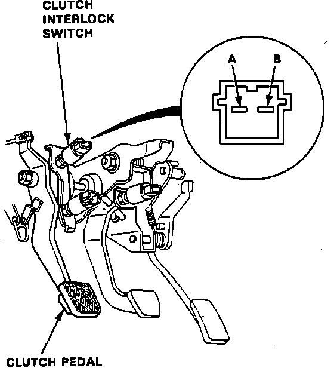

Clutch Switch: Testing and Inspection
Fig. 13 Clutch Interlock Switch Test:

1. Remove instrument panel lower cover.
2. Disconnect clutch interlock switch electrical connector.
3. Check for continuity as shown in, Fig. 13.
4. Continuity should be indicated when pedal is depressed and no continuity when pedal is released.
5. If continuity is not as indicated, replace switch.